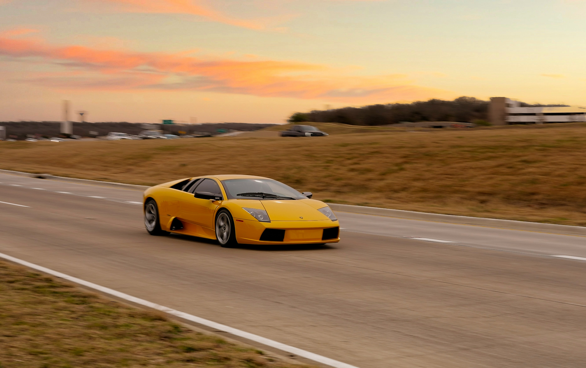

Közlekedés Hétköznapokban
A légi közlekedés környezeti hatásai
A légi közlekedés az egyik leggyorsabban növekvő közlekedési forma, ugyanakkor jelentős környezeti terheléssel jár. A repülőgépek működése során nagy mennyiségű üvegházhatású gáz kerül a légkörbe, ami hozzájárul a klímaváltozáshoz. Emellett a magaslégköri kibocsátások hatása különösen összetett, mivel a kondenzcsíkok és egyéb légköri jelenségek tovább erősíthetik a felmelegedést. Az iparág azonban folyamatosan keresi a fenntarthatóbb megoldásokat: egyre nagyobb hangsúlyt kapnak az üzemanyag-hatékonyabb repülőgépek, a fenntartható repülőgép-üzemanyagok (SAF), valamint az alternatív hajtási technológiák fejlesztése. A jövő kulcsa az innováció és a tudatos utazási döntések kombinációjában rejlik, amelyek segíthetnek csökkenteni a légi közlekedés ökológiai lábnyomát.

Az autóhasználat környezeti hatásai

A közlekedés fenntarthatósági szempontból komoly kihívást jelent, mivel számos formája hozzájárul a környezeti terheléshez. Az autóhasználat során keletkező károsanyag-kibocsátás jelentős, azonban fontos hangsúlyozni, hogy nem ez az egyetlen vagy feltétlenül a legnagyobb probléma. A különböző közlekedési módok eltérő hatással vannak a környezetre: például a légi közlekedés gyakran nagyobb ökológiai lábnyommal jár, míg a kerékpározás és a gyaloglás fenntarthatóbb alternatívát kínálnak. A fenntartható közlekedés kulcsa abban rejlik, hogy tudatos döntéseket hozunk, és lehetőség szerint előnyben részesítjük az alacsonyabb környezeti terheléssel járó megoldásokat.
A kerékpározás környezeti hatásai
A kerékpározás az egyik legfenntarthatóbb közlekedési forma, mivel működése során nem bocsát ki káros anyagokat, és minimális energiafelhasználással jár. A városi közlekedésben különösen hatékony alternatívát jelent, hiszen csökkenti a forgalmi torlódásokat és a zajszennyezést is. Emellett a kerékpáros infrastruktúra fejlesztése, például kerékpárutak és tárolók kiépítése, hosszú távon hozzájárulhat a környezetbarát közlekedési szokások elterjedéséhez. A kerékpározás nemcsak a környezetre van pozitív hatással, hanem az egészségre is, így egyszerre szolgálja az egyéni és a társadalmi jólétet.

A gyaloglás környezeti hatásai

A gyaloglás a legegyszerűbb és legkörnyezetkímélőbb közlekedési mód, amely semmilyen közvetlen környezeti terhelést nem okoz. Különösen rövidebb távolságok esetén ideális megoldás, hiszen nem igényel semmilyen üzemanyagot vagy külön infrastruktúrát. A gyalogosbarát városi környezet kialakítása, például biztonságos járdák, zöldterületek és forgalomcsillapított övezetek létrehozása, ösztönzi az embereket a fenntarthatóbb közlekedési formák választására. A gyaloglás emellett javítja az életminőséget, csökkenti a légszennyezést, és hozzájárul egy élhetőbb városi környezet kialakításához.